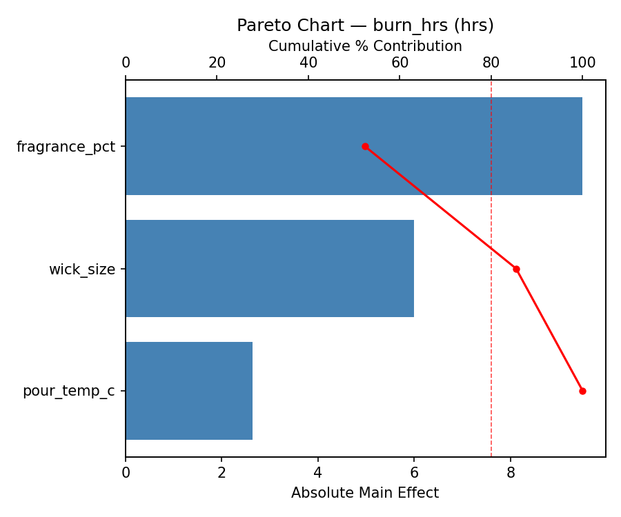
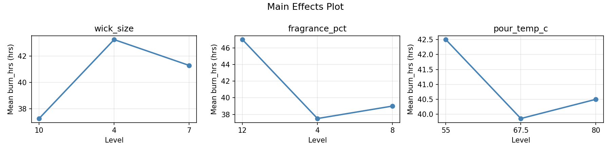
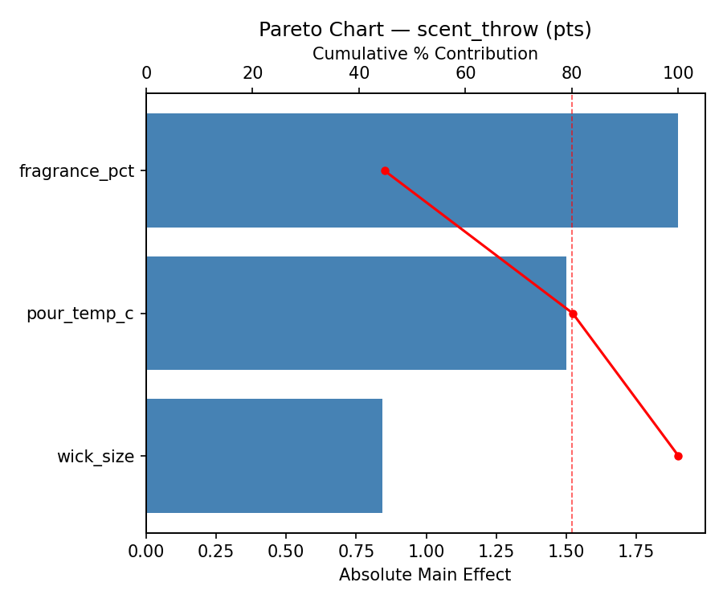
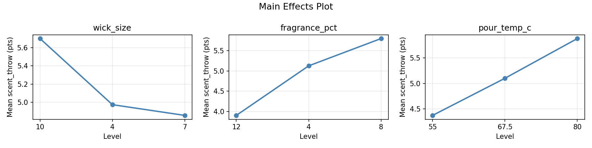
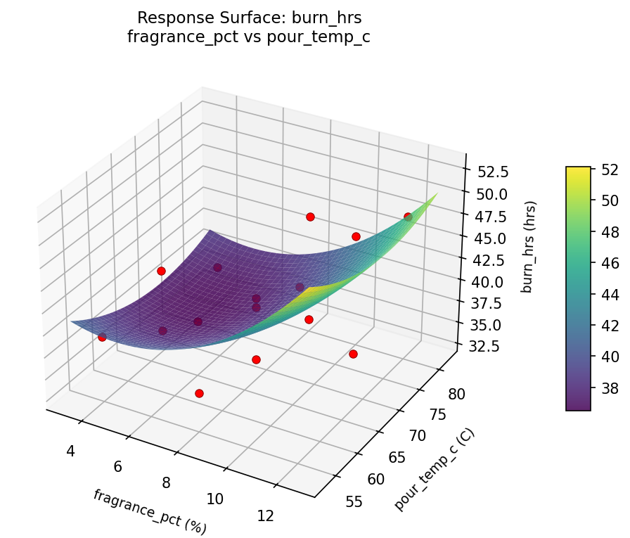
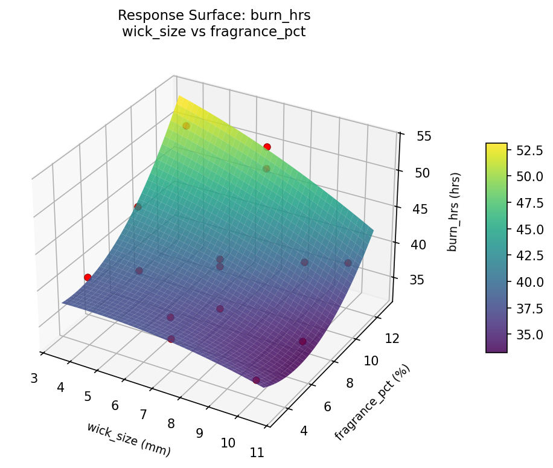
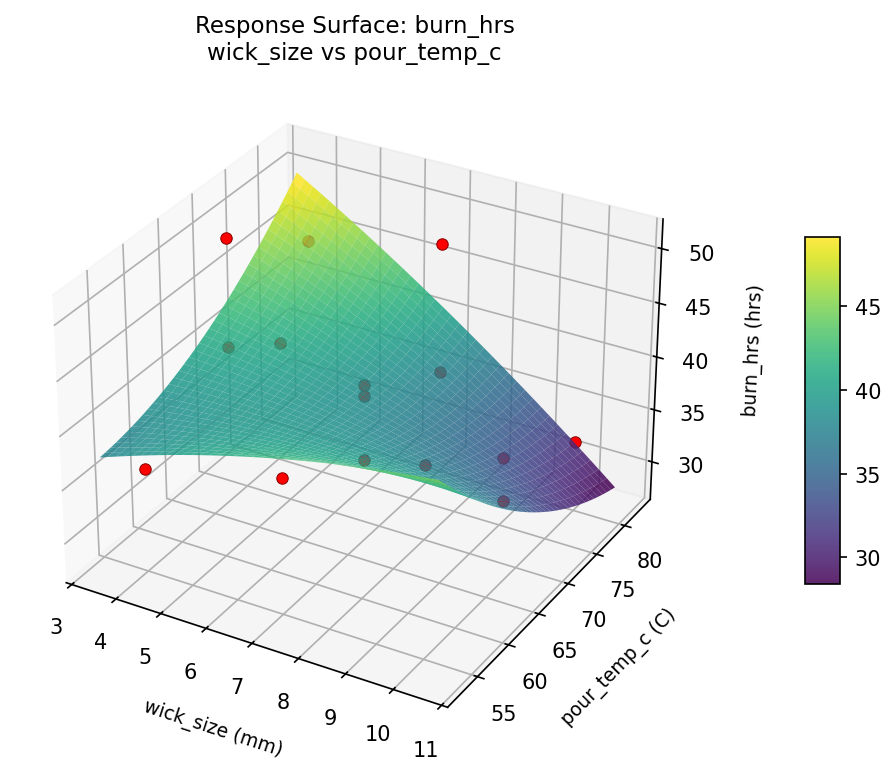
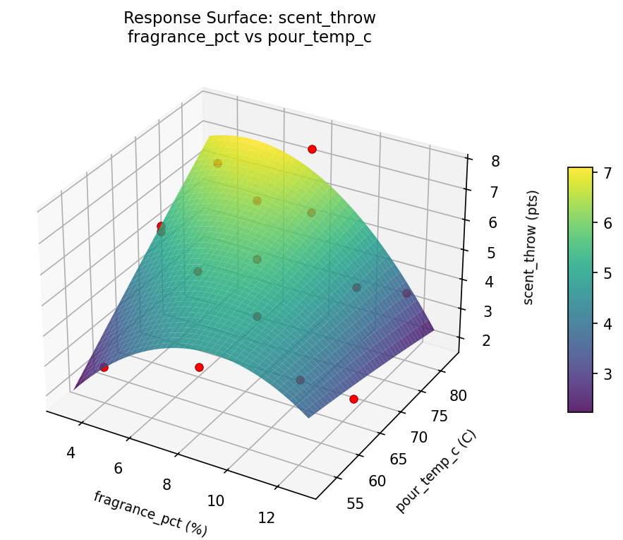
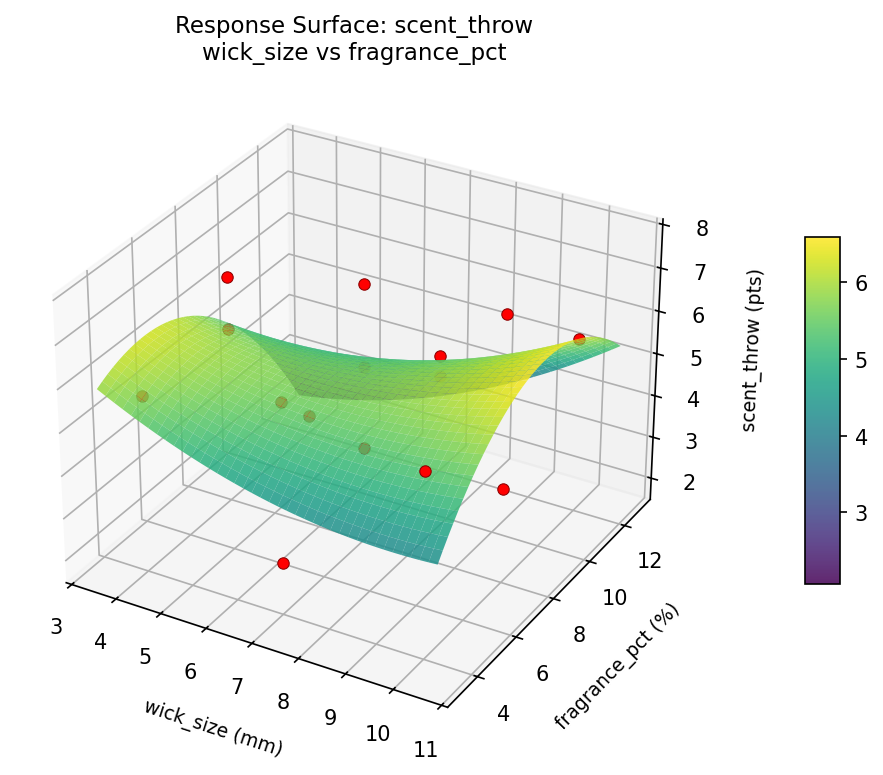
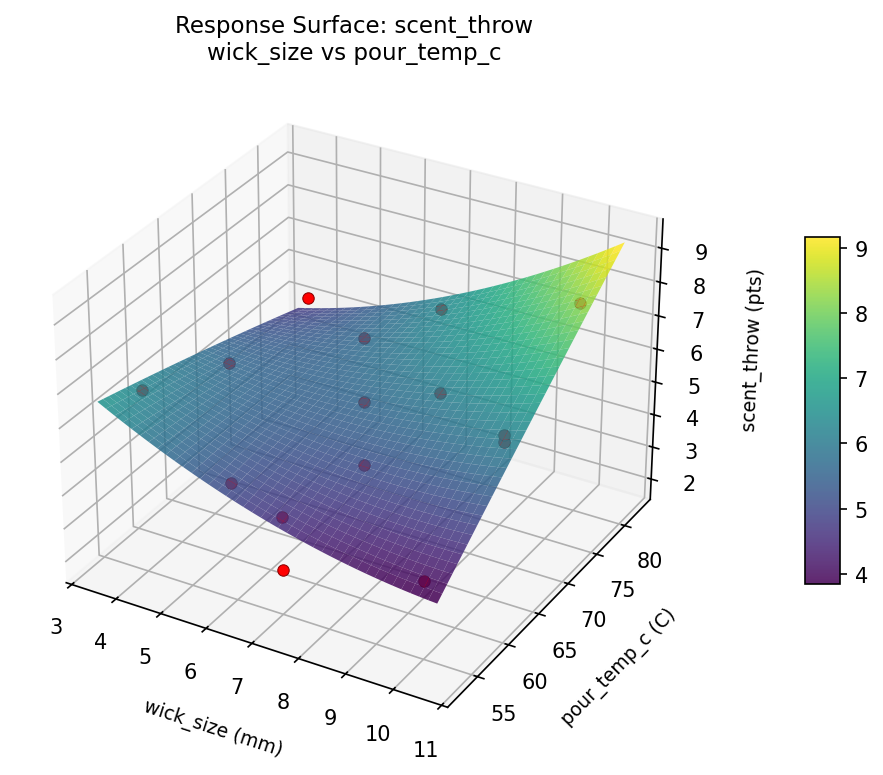

Experimental Setup
Factors
| Factor | Low | High | Unit |
|---|
wick_size | 4 | 10 | mm |
fragrance_pct | 4 | 12 | % |
pour_temp_c | 55 | 80 | C |
Fixed: wax_type = soy, container = 8oz_jar
Responses
| Response | Direction | Unit |
|---|
burn_hrs | ↑ maximize | hrs |
scent_throw | ↑ maximize | pts |
Configuration
{
"metadata": {
"name": "Candle Making Optimization",
"description": "Box-Behnken design to maximize burn time and scent throw by tuning wick size, fragrance load, and pour temperature"
},
"factors": [
{
"name": "wick_size",
"levels": [
"4",
"10"
],
"type": "continuous",
"unit": "mm"
},
{
"name": "fragrance_pct",
"levels": [
"4",
"12"
],
"type": "continuous",
"unit": "%"
},
{
"name": "pour_temp_c",
"levels": [
"55",
"80"
],
"type": "continuous",
"unit": "C"
}
],
"fixed_factors": {
"wax_type": "soy",
"container": "8oz_jar"
},
"responses": [
{
"name": "burn_hrs",
"optimize": "maximize",
"unit": "hrs"
},
{
"name": "scent_throw",
"optimize": "maximize",
"unit": "pts"
}
],
"settings": {
"operation": "box_behnken",
"test_script": "use_cases/140_candle_making/sim.sh"
}
}
Experimental Matrix
The Box-Behnken Design produces 15 runs. Each row is one experiment with specific factor settings.
| Run | wick_size | fragrance_pct | pour_temp_c |
|---|
| 1 | 7 | 4 | 55 |
| 2 | 7 | 8 | 67.5 |
| 3 | 10 | 8 | 80 |
| 4 | 10 | 8 | 55 |
| 5 | 7 | 8 | 67.5 |
| 6 | 7 | 8 | 67.5 |
| 7 | 4 | 8 | 80 |
| 8 | 10 | 4 | 67.5 |
| 9 | 7 | 4 | 80 |
| 10 | 10 | 12 | 67.5 |
| 11 | 4 | 8 | 55 |
| 12 | 7 | 12 | 80 |
| 13 | 4 | 4 | 67.5 |
| 14 | 4 | 12 | 67.5 |
| 15 | 7 | 12 | 55 |
Step-by-Step Workflow
1
Preview the design
$ python doe.py info --config use_cases/140_candle_making/config.json
2
Generate the runner script
$ python doe.py generate --config use_cases/140_candle_making/config.json \
--output use_cases/140_candle_making/results/run.sh --seed 42
3
Execute the experiments
$ bash use_cases/140_candle_making/results/run.sh
4
Analyze results
$ python doe.py analyze --config use_cases/140_candle_making/config.json
5
Get optimization recommendations
$ python doe.py optimize --config use_cases/140_candle_making/config.json
6
Generate the HTML report
$ python doe.py report --config use_cases/140_candle_making/config.json \
--output use_cases/140_candle_making/results/report.html
Features Exercised
| Feature | Value |
|---|
| Design type | box_behnken |
| Factor types | continuous (all 3) |
| Arg style | double-dash |
| Responses | 2 (burn_hrs ↑, scent_throw ↑) |
| Total runs | 15 |
Analysis Results
Generated from actual experiment runs using the DOE Helper Tool.
Response: burn_hrs
Top factors: fragrance_pct (52.4%), wick_size (33.1%), pour_temp_c (14.6%).
Pareto Chart

Main Effects Plot

Response: scent_throw
Top factors: fragrance_pct (44.8%), pour_temp_c (35.4%), wick_size (19.9%).
Pareto Chart

Main Effects Plot

Response Surface Plots
3D surfaces fitted with quadratic RSM. Red dots are observed data points.
burn hrs fragrance pct vs pour temp c

burn hrs wick size vs fragrance pct

burn hrs wick size vs pour temp c

scent throw fragrance pct vs pour temp c

scent throw wick size vs fragrance pct

scent throw wick size vs pour temp c

Full Analysis Output
RSM surface: rsm_burn_hrs_wick_size_vs_fragrance_pct.png
RSM surface: rsm_burn_hrs_wick_size_vs_pour_temp_c.png
RSM surface: rsm_burn_hrs_fragrance_pct_vs_pour_temp_c.png
RSM surface: rsm_scent_throw_wick_size_vs_fragrance_pct.png
RSM surface: rsm_scent_throw_wick_size_vs_pour_temp_c.png
RSM surface: rsm_scent_throw_fragrance_pct_vs_pour_temp_c.png
=== Main Effects: burn_hrs ===
Factor Effect Std Error % Contribution
--------------------------------------------------------------
fragrance_pct 9.5000 1.5414 52.4%
wick_size 6.0000 1.5414 33.1%
pour_temp_c 2.6429 1.5414 14.6%
=== Summary Statistics: burn_hrs ===
wick_size:
Level N Mean Std Min Max
------------------------------------------------------------
10 4 37.2500 4.9917 33.0000 44.0000
4 4 43.2500 6.3443 36.0000 51.0000
7 7 41.2857 6.1567 34.0000 51.0000
fragrance_pct:
Level N Mean Std Min Max
------------------------------------------------------------
12 4 47.0000 6.1644 38.0000 51.0000
4 4 37.5000 3.1091 34.0000 41.0000
8 7 39.0000 4.7610 33.0000 45.0000
pour_temp_c:
Level N Mean Std Min Max
------------------------------------------------------------
55 4 42.5000 6.5574 36.0000 51.0000
67.5 7 39.8571 5.7570 34.0000 51.0000
80 4 40.5000 7.1414 33.0000 48.0000
=== Main Effects: scent_throw ===
Factor Effect Std Error % Contribution
--------------------------------------------------------------
fragrance_pct 1.9000 0.4410 44.8%
pour_temp_c 1.5000 0.4410 35.4%
wick_size 0.8429 0.4410 19.9%
=== Summary Statistics: scent_throw ===
wick_size:
Level N Mean Std Min Max
------------------------------------------------------------
10 4 5.7000 1.6350 3.7000 7.7000
4 4 4.9750 2.1266 1.9000 6.8000
7 7 4.8571 1.6999 2.7000 7.5000
fragrance_pct:
Level N Mean Std Min Max
------------------------------------------------------------
12 4 3.9000 1.5341 1.9000 5.6000
4 4 5.1250 1.6520 2.7000 6.4000
8 7 5.8000 1.6533 3.7000 7.7000
pour_temp_c:
Level N Mean Std Min Max
------------------------------------------------------------
55 4 4.3750 1.7462 2.7000 6.8000
67.5 7 5.1000 1.7889 1.9000 7.5000
80 4 5.8750 1.6317 3.8000 7.7000
Pareto chart (burn_hrs): use_cases/140_candle_making/results/analysis/pareto_burn_hrs.png
Pareto chart (scent_throw): use_cases/140_candle_making/results/analysis/pareto_scent_throw.png
Main effects (burn_hrs): use_cases/140_candle_making/results/analysis/main_effects_burn_hrs.png
Main effects (scent_throw): use_cases/140_candle_making/results/analysis/main_effects_scent_throw.png
Optimization Recommendations
=== Optimization: burn_hrs ===
Direction: maximize
Best observed run: #7
wick_size = 10
fragrance_pct = 8
pour_temp_c = 55
Value: 51.0
RSM Model (linear, R² = 0.1147, Adj R² = -0.1267):
Coefficients:
intercept +40.7333
wick_size +2.0000
fragrance_pct +1.1250
pour_temp_c -1.3750
RSM Model (quadratic, R² = 0.7807, Adj R² = 0.3860):
Coefficients:
intercept +39.6667
wick_size +2.0000
fragrance_pct +1.1250
pour_temp_c -1.3750
wick_size*fragrance_pct -6.2500
wick_size*pour_temp_c -5.7500
fragrance_pct*pour_temp_c -1.5000
wick_size^2 +1.6667
fragrance_pct^2 +1.9167
pour_temp_c^2 -1.5833
Curvature analysis:
fragrance_pct coef=+1.9167 convex (has a minimum)
wick_size coef=+1.6667 convex (has a minimum)
pour_temp_c coef=-1.5833 concave (has a maximum)
Notable interactions:
wick_size*fragrance_pct coef=-6.2500 (antagonistic)
wick_size*pour_temp_c coef=-5.7500 (antagonistic)
fragrance_pct*pour_temp_c coef=-1.5000 (antagonistic)
Predicted optimum (from quadratic model):
wick_size = 10
fragrance_pct = 4
pour_temp_c = 67.5
Predicted value: 50.3750
Model quality: Good fit — general trends are captured, some noise remains.
Factor importance:
1. wick_size (effect: 4.0, contribution: 39.0%)
2. pour_temp_c (effect: 3.2, contribution: 31.4%)
3. fragrance_pct (effect: 3.0, contribution: 29.6%)
=== Optimization: scent_throw ===
Direction: maximize
Best observed run: #10
wick_size = 7
fragrance_pct = 8
pour_temp_c = 67.5
Value: 7.7
RSM Model (linear, R² = 0.2021, Adj R² = -0.0155):
Coefficients:
intercept +5.1133
wick_size -1.0000
fragrance_pct +0.1125
pour_temp_c -0.1375
RSM Model (quadratic, R² = 0.8688, Adj R² = 0.6327):
Coefficients:
intercept +6.3000
wick_size -1.0000
fragrance_pct +0.1125
pour_temp_c -0.1375
wick_size*fragrance_pct +1.5750
wick_size*pour_temp_c -0.5750
fragrance_pct*pour_temp_c +1.5000
wick_size^2 -0.6250
fragrance_pct^2 -1.2500
pour_temp_c^2 -0.3500
Curvature analysis:
fragrance_pct coef=-1.2500 concave (has a maximum)
wick_size coef=-0.6250 concave (has a maximum)
pour_temp_c coef=-0.3500 concave (has a maximum)
Notable interactions:
wick_size*fragrance_pct coef=+1.5750 (synergistic)
fragrance_pct*pour_temp_c coef=+1.5000 (synergistic)
wick_size*pour_temp_c coef=-0.5750 (antagonistic)
Predicted optimum (from quadratic model):
wick_size = 4
fragrance_pct = 4
pour_temp_c = 67.5
Predicted value: 6.8875
Model quality: Good fit — general trends are captured, some noise remains.
Factor importance:
1. wick_size (effect: 2.0, contribution: 54.8%)
2. fragrance_pct (effect: 1.3, contribution: 35.5%)
3. pour_temp_c (effect: 0.4, contribution: 9.7%)